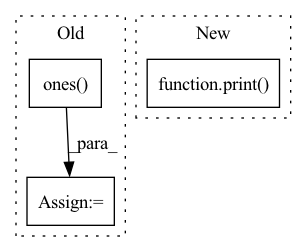

Pattern ID :668

Before Change
// Initialize gate to 1
if self.gate_type == "features":
self.scale = nn.Parameter(torch.ones((input_shape[-1],)), requires_grad=True).view(1, 1, input_shape[-1])
elif self.gate_type == "heads":
self.scale = nn.Parameter(torch.ones((input_shape[1],)), requires_grad=True).view(1, input_shape[1], 1, 1)
self.scale = self.scale.repeat(1, 1, 1, input_shape[-1])
After Change
self.einsum_in_1 = self.einsum_in_1[:len(self.input_shape)]
self.einsum_in_2 = self.einsum_in_1[self.dim_to_scale]
print(f"{self.einsum_in_1},{self.einsum_in_2}->{self.einsum_in_1}")
// Prepare streams info
self.streams_in_module = {"inputs": [[self.input_name, self.input_shape],
],
In pattern: SUPERPATTERN
Frequency: 3
Non-data size: 3
Instances
Fragment ID: 2407813
Project Name: antofuller/configaformers
Commit Name: 587753fa0f50da143bb3a3ad4da1d65e3ee72c60
Time: 2021-11-11
Author: afuller187187@gmail.com
File Name: norm_module.py
M Class Name: Gate
N Class Name: Gate
M Method Name: __init__(3)
N Method Name: __init__(3)
M Parent Class: nn.Module
N Parent Class: nn.Module
M File Name: norm_module.py
N File Name: norm_module.py
M Start Line: 106
M End Line: 123
N Start Line: 106
N End Line: 129
'>
Before Change
self.classifier = nn.Linear(self.reid_dim, self.nID)
self.IDLoss = nn.CrossEntropyLoss(ignore_index=-1)
self.emb_scale = np.math.sqrt(2) * np.math.log(self.nID - 1)
self.s_det = nn.Parameter(-1.85 * torch.ones(1), requires_grad=False)
self.s_id = nn.Parameter(-1.05 * torch.ones(1), requires_grad=False)
def forward(self, preds, targets, imgs=None):
After Change
self.classifiers = nn.ModuleList()
self.emb_scales = []
for idx, (label, id_num) in enumerate(zip(self.label_name, id_nums)):
print("{}, tracking label name: "{}", tracking_id number: {}, feat dim: {}".format(idx, label, id_num,
self.reid_dim))
self.emb_scales.append(np.math.sqrt(2) * np.math.log(id_num - 1))
self.classifiers.append(nn.Linear(self.reid_dim, id_num))
def forward(self, preds, targets, imgs=None):
'>
Fragment ID: 2407814
Project Name: zhangming8/yolox-pytorch
Commit Name: e162fc0465b1f5d8b3211cdc81fd8eabb6dd55c7
Time: 2021-07-26
Author: zhangming8@github.com
File Name: models/losses/yolox_loss.py
M Class Name: YOLOXLoss
N Class Name: YOLOXLoss
M Method Name: __init__(6)
N Method Name: __init__(6)
M Parent Class: nn.Module
N Parent Class: nn.Module
M File Name: models/losses/yolox_loss.py
N File Name: models/losses/yolox_loss.py
M Start Line: 19
M End Line: 37
N Start Line: 19
N End Line: 48
'>
Before Change
self.Pt = Pt/self.Nh
self.fc1 = Pt/self.Nh
x_flat = np.ones((1,1,Nl,Nc))
x_flat = torch.Tensor(x_flat)
x_flat = x_flat.float()
x_flat = x_flat.to(self.H.device)
(b,c,h,w) = x_flat.size()
if Stat_comp:
m_flat = torch.matmul(x_flat,self.H2)
else :
m_flat = torch.matmul(x_flat,self.H)
x_flat = torch.matmul(m_flat,self.Pt)
x_flat = x_flat.view(b*c,1,h,w)
self.flat = x_flat
//-- Measurement to image domain
After Change
// Pinv = torch.from_numpy(Pinv)
//else:
if Stat_comp:
print("Statistic completion")
Pinv = torch.pinverse(self.H2, rcond=alpha)
else:
Pinv = torch.pinverse(self.H, rcond=alpha)
Pinv = Pinv.float()
'>
Fragment ID: 2407824
Project Name: openspyrit/spyrit
Commit Name: c765ffa67ce6930782e3ae1be7517a692de8a7be
Time: 2021-11-23
Author: sebastien.crombez@univ-lyon1.fr
File Name: spyrit/learning/model_Had_1D_DCAN.py
M Class Name: compNet_1D_size_stat
N Class Name: compNet_1D_size_stat
M Method Name: __init__(11)
N Method Name: __init__(12)
M Parent Class: nn.Module
N Parent Class: nn.Module
M File Name: spyrit/learning/model_Had_1D_DCAN.py
N File Name: spyrit/learning/model_Had_1D_DCAN.py
M Start Line: 1140
M End Line: 1249
N Start Line: 1224
N End Line: 1224